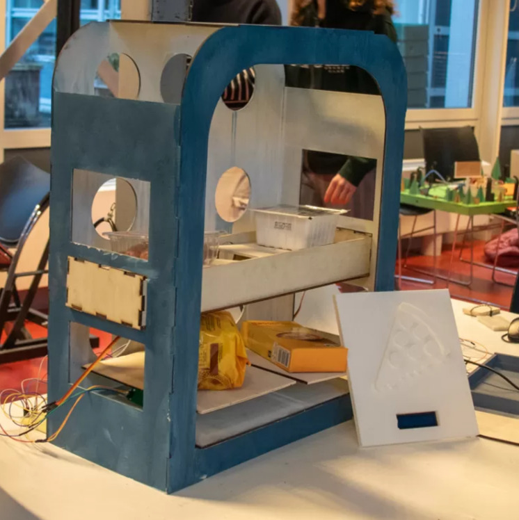

Back to Projects
Smart Menu Card/Pantry
Module 2 - Creative Technology

Overview
For this project, me and my team were tasked with creating a smart environment, i.e. something that a person can operate without any explicit interaction with a user.
The Prototype
Me and my team created a smart pantry connected to a smart menu card. The pantry tracked the amount of ingredients via hx711 load cells. When an ingredient was at the verge of running out, a substitution would be sent to the menu card for a reduced price. This ensures that no ingredients go unused when only 1 runs out.